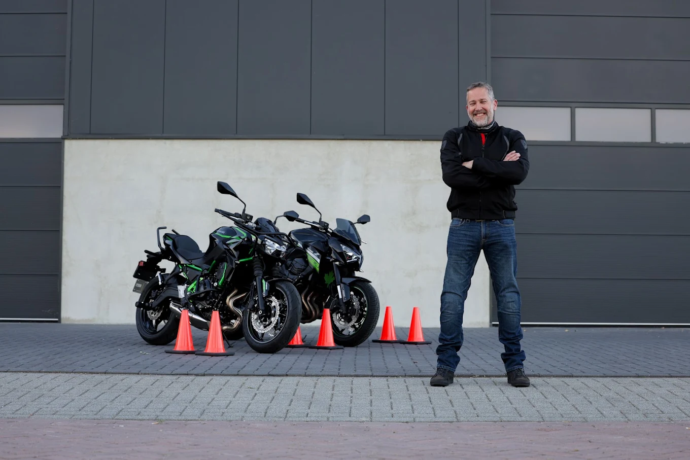
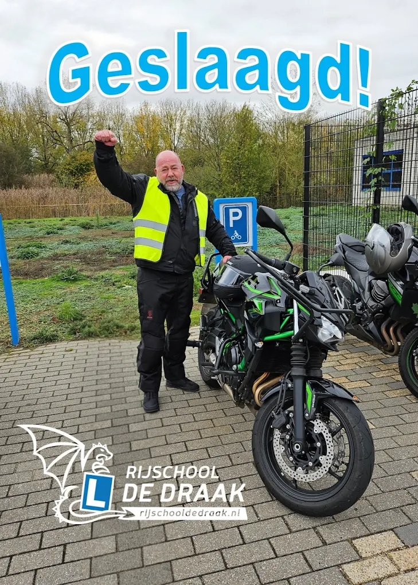

Motorrijles · Den Bosch, Rosmalen en omstreken
Op twee wielen, met de draak in je spiegels
Blokken van 120 minuten op de Kawasaki Z650, van je eerste gasdraai tot AVB en AVD.

De lesopzet
Blokken van 120 minuten, want motorrijden leer je niet in een kwartier
Motorlessen bij De Draak duren 120 minuten. Zo is er tijd om echt te rijden in plaats van vooral op en af te stappen. Je start op een afgesloten terrein met voertuigbeheersing en gaat de weg pas op als dat veilig voelt.
Je rijdt op de Kawasaki Z650: licht genoeg om vertrouwen op te bouwen, sterk genoeg om er alles mee te leren. Heb je zelf al een A1- of A2-motor? In overleg kun je daarop lessen.
- Uitrusting geregeld. Voor je proefles en je lessen heeft de school goedgekeurde kleding en helmen. Eigen uitrusting kopen? Via De Draak krijg je korting bij Motoport Den Bosch.
- Indicatie: 20 tot 30 lessen. Afhankelijk van aanleg en ervaring. Na de proefles krijg je een eerlijke inschatting.
- Voor elke leeftijd. Van je eerste motor op je 18e tot alsnog dat rijbewijs op je 56e.
Welk rijbewijs past bij jou?
A1, A2, A of code 80
De regels op een rij, zonder ambtelijke taal. William adviseert je bij de proefles welke route voor jou het slimst is.
Categorie
Voor wie
Lichte motor, maximaal 11 kW en 125 cc.
Lessen kan vanaf je 17e, examen vanaf je 18e.
Middenklasse tot 35 kW.
Examen vanaf je 20e, of eerder gestart via A1.
Zware motor, onbeperkt vermogen.
Rechtstreeks lessen vanaf je 21e; met twee jaar A2 al eerder.
A-rijbewijs met beperking tot lichtere motor.
Ben je jonger dan 24? Dan geldt code 80 tot je 24e of maximaal twee jaar.
Twee examens, één plan
AVB en AVD in mensentaal
AVB: laat zien dat jij de motor de baas bent
Het eerste examen draait om voertuigbeheersing, op een afgesloten terrein. Zeven oefeningen: langzaam rijden, slalom, uitwijken, precies remmen. De examinator kijkt vanaf de zijkant of jij de motor beheerst bij lage en hoge snelheid. Geen verkeer, alleen jij en de machine.
AVD: de weg op, met de examinator erachter
Het tweede examen is een rit van ongeveer 35 minuten door het echte verkeer. Je krijgt aanwijzingen via een oortje, de examinator rijdt achter je. Gekeken wordt naar veiligheid, kijkgedrag en wegpositie. Precies wat je in de lesblokken honderd keer geoefend hebt.
Goed om te weten: voor het AVB-examen hoef je nog geen theorie te hebben gehaald, voor het AVD-examen wel. William plant beide examens met je in op het juiste moment.

Uit de reviews
Begonnen op zijn 56e, in één keer geslaagd
Op 56-jarige leeftijd toch maar eens aan een rijbewijs begonnen, maar dan wel voor de motor. William neemt de tijd, legt uit en daagt je uit om elke les een stapje meer te doen. Net zolang tot je met vertrouwen de weg op gaat. Het resultaat: in één keer geslaagd voor AVB en AVD. Dankjewel voor de leuke lessen William.
Proef het zelf
Eerste keer op een motor? De proefles is gratis
Uitrusting ligt klaar, de Z650 staat warm. Jij hoeft alleen te komen.